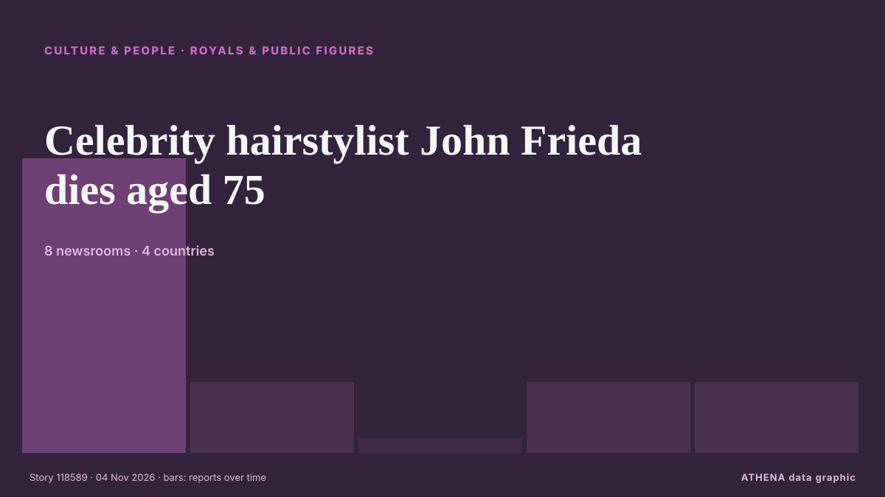

Culture, People & Lifestyle
SponsoredPresented by  Cybernetics and Artificial Intelligence Lab Welcome to the Cybernetics and Artificial Intelligence Laboratory, established at the Department of Business Administration of the National and Kapodistrian University of Athens. The lab is headed by Professor Dimitrios Thomakos. The lab aims to do research that can be published in top venues. Our research uses tools and methods of Artificial Intelligence, and lies in the following areas: - Forecasting - Decision making - Cyber security - Finance We are always looking forward to collaborating with exceptional students!
Cybernetics and Artificial Intelligence Lab Welcome to the Cybernetics and Artificial Intelligence Laboratory, established at the Department of Business Administration of the National and Kapodistrian University of Athens. The lab is headed by Professor Dimitrios Thomakos. The lab aims to do research that can be published in top venues. Our research uses tools and methods of Artificial Intelligence, and lies in the following areas: - Forecasting - Decision making - Cyber security - Finance We are always looking forward to collaborating with exceptional students!

Royals & public figuresCelebrity hairstylist John Frieda dies aged 75
His death was announced on the official Instagram account for his eponymous hair salon. from The Irish News (Belfast)
| 22 Oct | 4 |
|---|---|
| 23 Oct | 11 |
| 24 Oct | 13 |
| 25 Oct | 6 |
| 26 Oct | 52 |
| 27 Oct | 72 |
| 28 Oct | 75 |
| 29 Oct | 79 |
| 30 Oct | 87 |
| 31 Oct | 54 |
| 1 Nov | 49 |
| 2 Nov | 95 |
| 3 Nov | 84 |
| 4 Nov | 17 |
Romesh Ranganathan and Sebastian Croft relieved Celebrity Traitors win is out
The actor, 24, and comedian Romesh Ranganathan were crowned the winners of the BBC reality show on Friday. from The Irish News (Belfast)
Senior N. Korean party official visiting China: KCNA
SEOUL, Nov. 4 (Yonhap) -- A senior North Korean ruling party official has arrive... from Yonhap (English)
Aaron-Roy King, Pang Ron-Pei Jing fall in Hylo Open semi-finals
KUALA LUMPUR: Malaysia's impressive run of winning at least one title at each of the previous three stops of the European swing came to an end after Aaron Tai-Yap Roy King and Hoo Pang Ron-Lai Pei… from New Straits Times
‘The Remarried Empress’ Gets Surprise Early Premiere On Disney+/Hulu
'The Remarried Empress,' starring Shin Mina, Ju Jihoon, Lee Jongsuk and Lee Seyoung, will debut November 3 on Disney+ and Hulu, a day ahead of schedule. from Forbes Business
National Galleries of Scotland to loan 60 artworks to China for major exhibition
The board of NGS is understood to have signed off an agreement with China. from The Scotsman
King Charles calls slavery 'monstrous injustice' as PM mulls apology
Charles and Camilla toured the museum at Antigua’s Government House, once a symbol of British colonial oppression for Antiguans. from Evening Standard (London)
My Chemical Romance Leads ‘Parade’ of Reissues Marching Onto Billboard 200 Albums Chart
On the new Billboard Pop Shop Podcast, Katie & Keith are taking a closer look at re-released albums from Beyoncé, The Beatles, Mac Miller & more. from Billboard
Toluwanisings’ wife, father, others sign peace undertaking
The Oyo State Police Command has brokered peace between the family and associates of late Nigerian singer Olayemi Bayonle Bolaji, popularly known as Toluwanisings, following disagreements over his… from Vanguard
Cartoon for November 4, 2026
The news of the day as interpreted by our talented artists, illustrators and cartoonists. from Sydney Morning Herald
King Charles' sorrow over slavery faces test as reparations movement gains ground
European traders enslaved 12.5 million Africans, including 3.2 million transported by Britain. from Express Tribune
At ‘China’s Hollywood’, Visitors Become Stars as Consumers Spend More on Experiences
Since the experience launched in August, Hengdian World Studios said more than 2,000 people had taken part, with bookings full on most days. from CNA (Channel NewsAsia)
Egyptian mummy portraits show antiquity’s piercing gaze
AN elegant woman gazes out from her portrait with expressive eyes, a gilded wreath worn in her hair and a gentle, questioning look on her face. from New Straits Times
2026 Prix Goncourt: France's prestigious literary prize awarded to Philippe Jaenada
France’s prestigious literary prize “The Goncourt” was awarded on Monday to writer Philippe Jaenada. from France 24 English
Baghdad’s first Jewish museum opens its doors
Iraq’s Jewish community has launched its first museum in a former Jewish school in Baghdad, aimed at preserving the heritage of this minority group. from Arab News
Mourners gather for the funeral of athlete Ciara Mageean
Stormont MLAs paid tribute to Ms Mageean’s remarkable career and personality in the Assembly on Monday. from The Irish News (Belfast)
Johnny Depp teases possible return as Jack Sparrow in ‘Pirates of the Caribbean 6’
Johnny Depp is finally sounding off about the possibility of returning as Jack Sparrow in “Pirates of the Caribbean 6.” Speaking to Entertainment Tonight on his “Ebenezer” press tour, the Oscar… from Variety
Cinemark Stock Pops On Record Q3 Revenue
Cinemark, the nation’s third largest exhibitor, saw revenue jump 23% to $1.1 billion for the three months ended in September, its best-ever third quarter amid a broad box office rebound. from Deadline
Kristin Scott Thomas stars in festive John Lewis jaunt with toy dog Pickles
Dame Kristin and Pickles, voiced by Paul Whitehouse, take off on a tuk-tuk ride around London to find a better gift than cash inside a Christmas card. from The Irish News (Belfast)
Ahmet Nazif Zorlu, chairman of Zorlu Holding, dies at 82
Zorlu Holding has announced the passing of its chairman, Ahmet Nazif Zorlu, at the age of 82 following lung cancer treatment, marking the loss of a prominent leader who built one of Türkiye’s largest… from Hürriyet Daily News
James Bond actor Ben Whishaw says franchise ‘needs to be reinvented’
The 46-year-old has starred in three James Bond films alongside Daniel Craig as the character of Q. from Evening Standard (London)
Macklemore 'overwhelmed' after Free Palestine Tour
Macklemore says ‘being human is not complicated’ as he kicked off his Free Palestine tour on Thursday night. from Al Jazeera English
Thomas Ong, 57, slips & fractures ankle 10 days into 45-day Japan trip after photographing waterfall
He will let his ankle heal by itself instead of having surgery. from Mothership
King Charles gets drenched in Antigua rainstorm as Camilla gets only umbrella
King Charles flung up his hands in despair as he was caught in a tropical rainstorm in Antigua, while his wife Queen Camilla strolled off with the only available umbrella. from CBC News (alternative feed)
Keira Knightley is ‘utterly mesmeric’, says Black Doves co-star Andrew Buchan
Buchan has reprised his role as Knightley’s on-screen husband in the Netflix thriller. from Evening Standard (London)
'I Play Rocky' tells the underdog story behind the classic underdog film
LOS ANGELES: A young Sylvester Stallone had one non-negotiable demand when he was trying to sell his script about a small-time boxer named Rocky Balboa. from Business Recorder
Newsom’s November Surprise: Boost CA Film & TV Tax Incentives To $1B ASAP, Says Exiting Governor
The day before his successor as California’s governor is elected in the high stakes midterms, Gavin Newsom is going out with a bang. from Deadline
Techno Pioneer Juan Atkins Dead At 64
The Detroit producer and DJ pioneered the genre as a solo artist and member of the Belleville Three, Cybotron, and Borderland. from Pitchfork news
'Godzilla Minus Zero2 gets loud applause at Tokyo film festival
Since the release of Godzilla Minus One in 2023, things have gotten a bit crazy... from Empire
Kennedy Center Honorees Class Of 2026: Paul Anka, David Foster, Andy Garcia, David Mamet & Barbara Mandrell
One day ahead of D.C.’s Big Day, we have the latest recipients of the annual Kennedy Center Honors. from Deadline
Heidi Klum reveals Halloween costume as her annual party marks 25 years
Klum was unrecognisable, with only her eyes and mouth showing. from The Irish News (Belfast)
Strictly Come Dancing fans 'absolutely devastated' as spoiler reveals who left
Strictly Come Dancing fans have shared their disappointment after the latest results were leaked online. from WalesOnline
BST Hyde Park 2027: RAYE announced as next headliner
She will be joined by Sienna Spiro for her biggest headline show to date. from NME